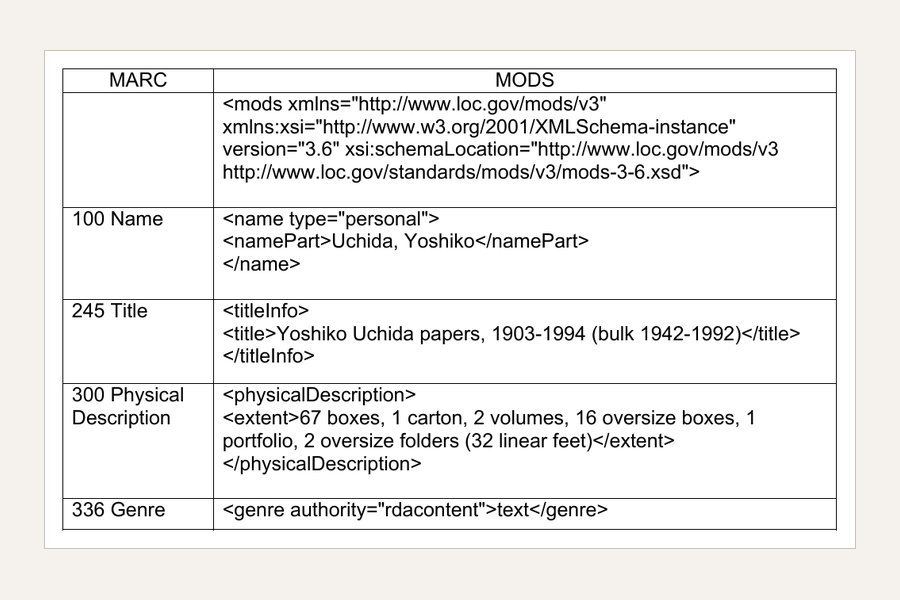
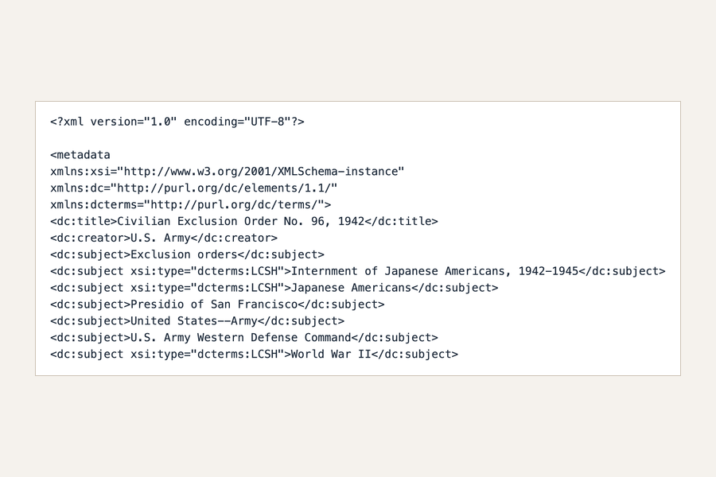
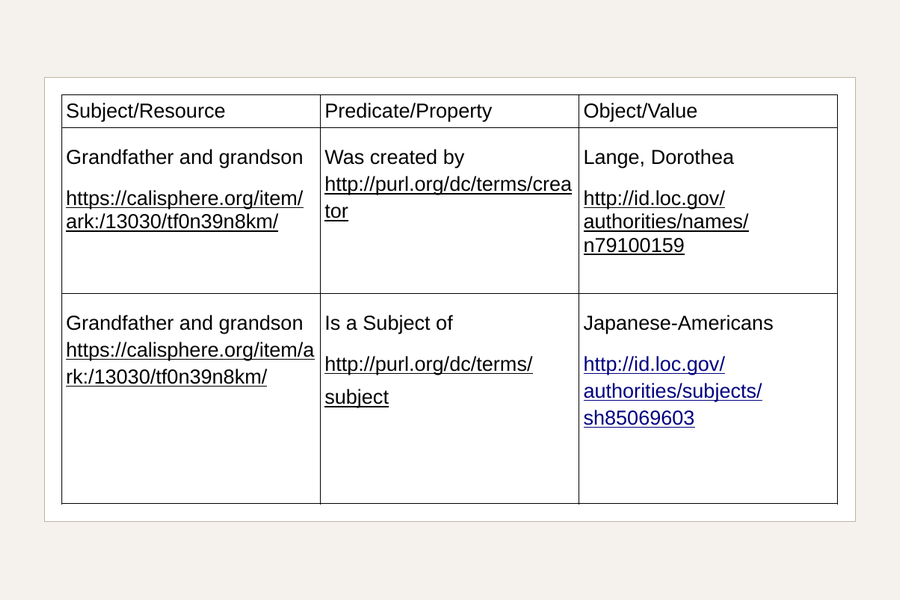

Metadata Standards

MARC to MODS Crosswalk
A field-by-field mapping of the Bancroft Library's MARC record for the Yoshiko Uchida papers to MODS 3.6.

Dublin Core Records
Dublin Core records in XML for Civilian Exclusion Order No. 96 and a 1912 Bain News Service glass negative.

RDF Triples
32 RDF triples describing the creators and subjects of five Calisphere items on Japanese American internment.